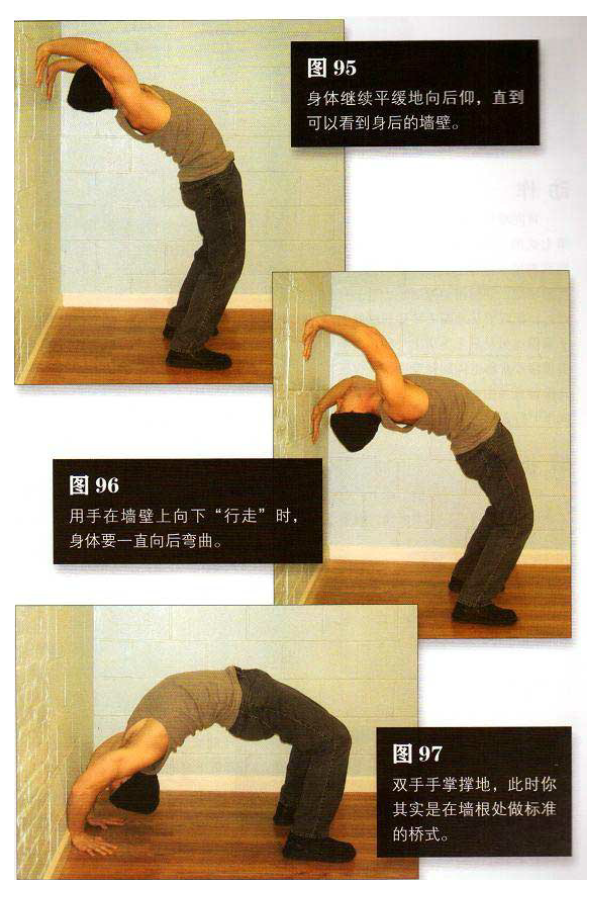

站在距墙壁大约一臂远的位置，如果把握不准，可以稍近一点儿，这样可以更安全地调整。双脚与肩同宽，锁部向前挺，身体向后弯。抬起下巴，头尽量向后仰，以舒服为准。身体继续平缓地向后弯，直到可以看到身后的墙壁。一旦能看见墙壁，便将双手举过头顶，手掌紧贴墙壁，手指朝下，与头部齐平.将一部分体重向后转移到手上，把一只手降低几厘米，再让其紧贴墙壁；然后再移动另一只手，使其降得更低
用手在墙壁上向下“行走”时，身体要一直向后弯曲（图 96）。手向下移动的同时，双脚也要一点点远离墙壁，以适应身体弯曲—只要感觉需要这样做.就小步向前移动。双手继续交替下移，直到移至墙根为止。之后双手手掌撑地，此时你其实是在墙根处做标准的桥式。这是该动作的最低点（图 97）。然后让身体落到地板上，再站起来，回到起始姿势，重新开始下一轮动作。整个动作过程中要平缓呼吸。
初级标准：1 组，3 次
中级标准：2 组，各 6 次
高级标准：2 组，各 10 次